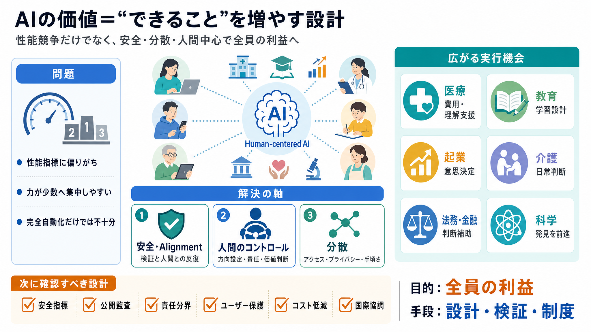

Read Sam Altman's plan for OpenAI as it enters its 'third phase' - Business Insider
# Read Sam Altman's plan for OpenAI as it enters its 'third phase'. Sam Altman and OpenAI's chief scientist shared their…

# Read Sam Altman's plan for OpenAI as it enters its 'third phase'. Sam Altman and OpenAI's chief scientist shared their…
## Brian Hanson's Post. ### **Brian Hanson**. Sam Altman just dropped OpenAI’s current plan — their third phase as they …
Per a blog post by Sam Altman and Jakub Pachocki, OpenAI says it is entering a "third phase" focused on making AI "abund…
[Skip to main content](https://openai.com/index/built-to-benefit-everyone-our-plan#main). * [Research](https://openai.…
[Skip to main content](https://openai.com/index/industrial-policy-for-the-intelligence-age#main). * [Research](https:/…